Проект в рамках конкурса организованного Bee breeders. Задача конкурса: проектирование условной аптеки для продажи лечебной марихуаны и создание теоретической концепции, позволившей бы встроить подобную функцию в систему любого государства.
Решение: Советский Союз оставил после себя огромное количество здравниц, многие из которых на сегодняшний день пустуют, либо вообще находятся в полузаброшенном состоянии. Концепция подразумевает внедрение в ряд санаториев использование каннабиса наряду с другими лечебными процедурами. Естественно, подобное возможно лишь при наличии соответствующего диагноза и официального направления. При санаториях могут находиться и свои производства, что позволит проводить исследования и выращивать растения с наиболее подходящими для лечения характеристиками.
Для примера был выбран санаторий Форос. Сама аптека выполнена в виде круга в плане. По центру сооружения предусмотрен общий открытый сад. По краям организованы кабинеты для общения с врачами, а так же небольшие пространства где можно уединиться своей компанией. Фасад выполнен исключительно из стекла, чтобы у посетителей не возникало ощущение медицинского учреждения, и ничто не отвлекало от созерцания потрясающей природы ботанического сада форосского санатория.
feat.
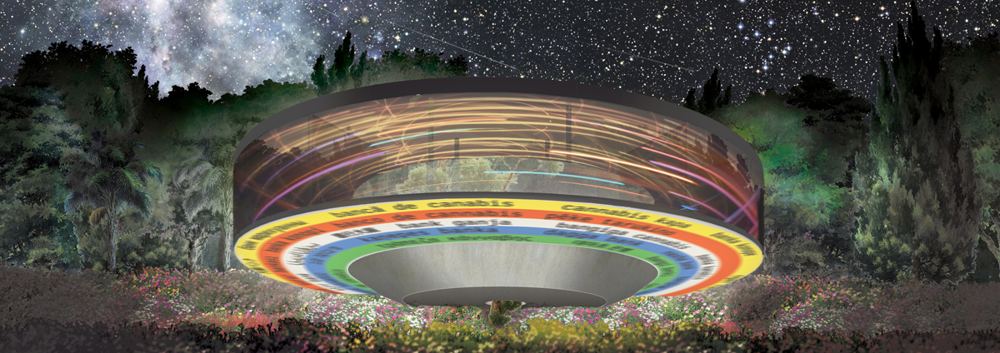
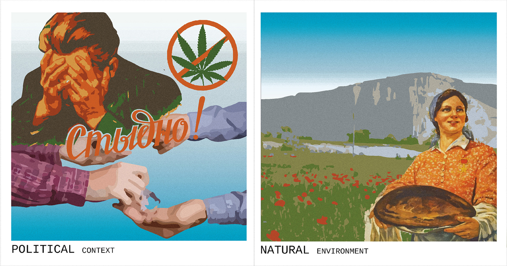
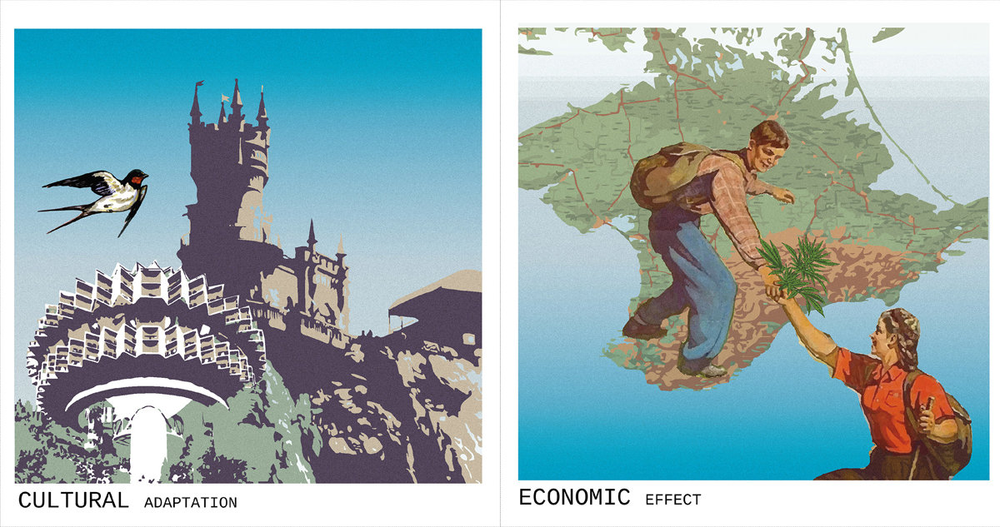
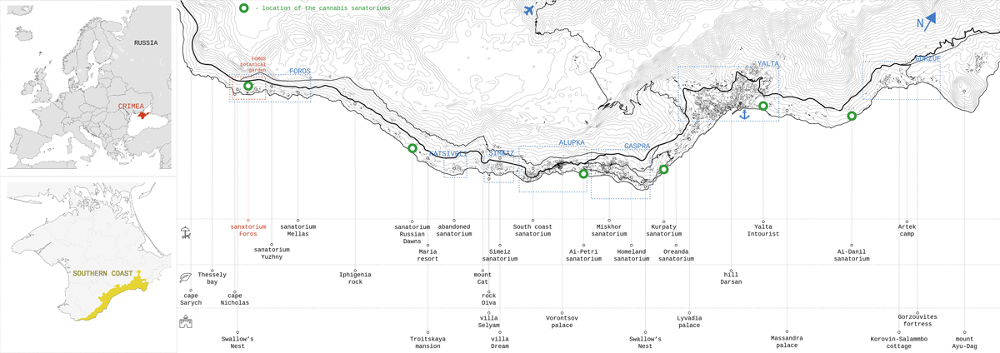
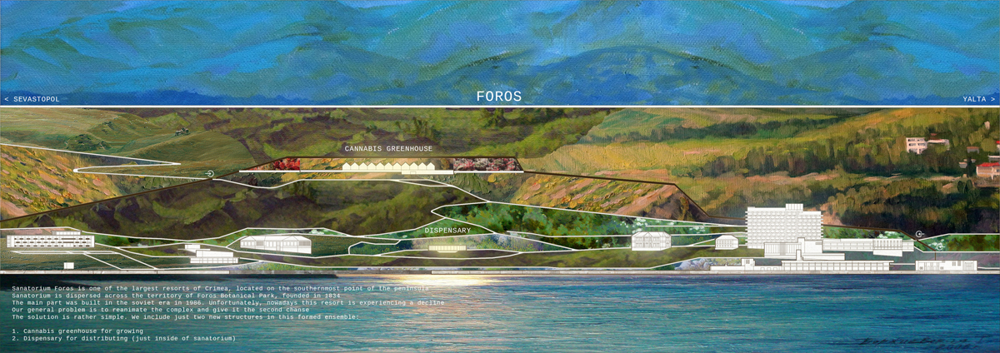
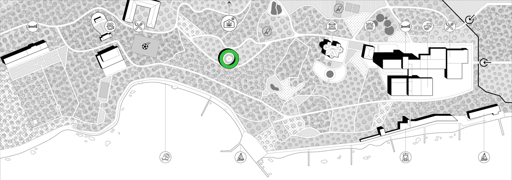
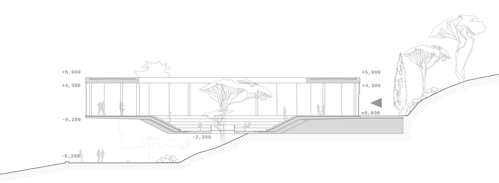
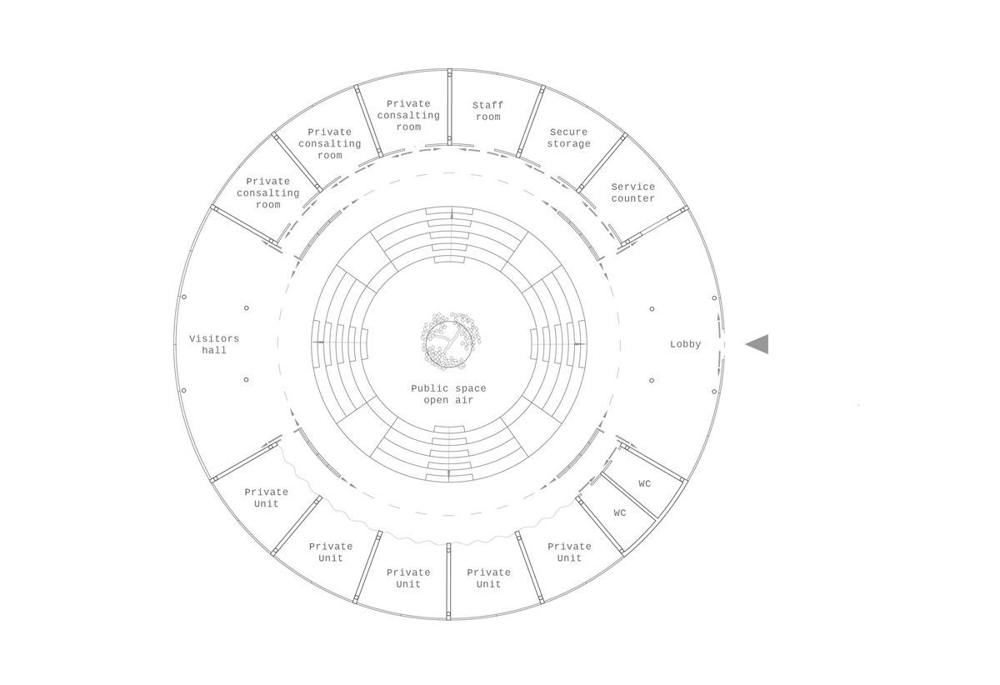
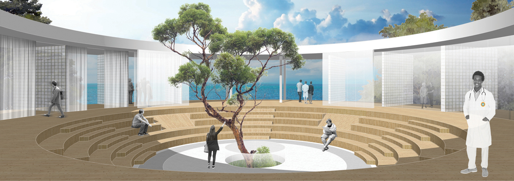
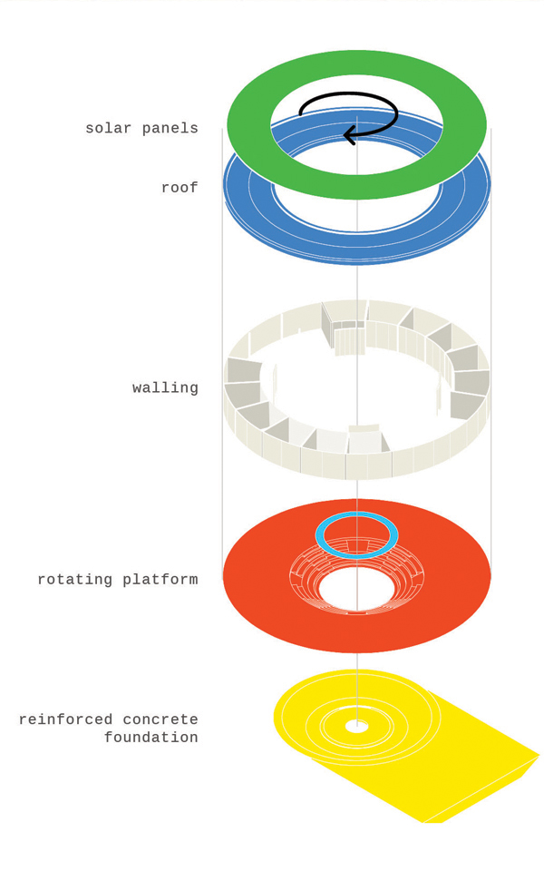
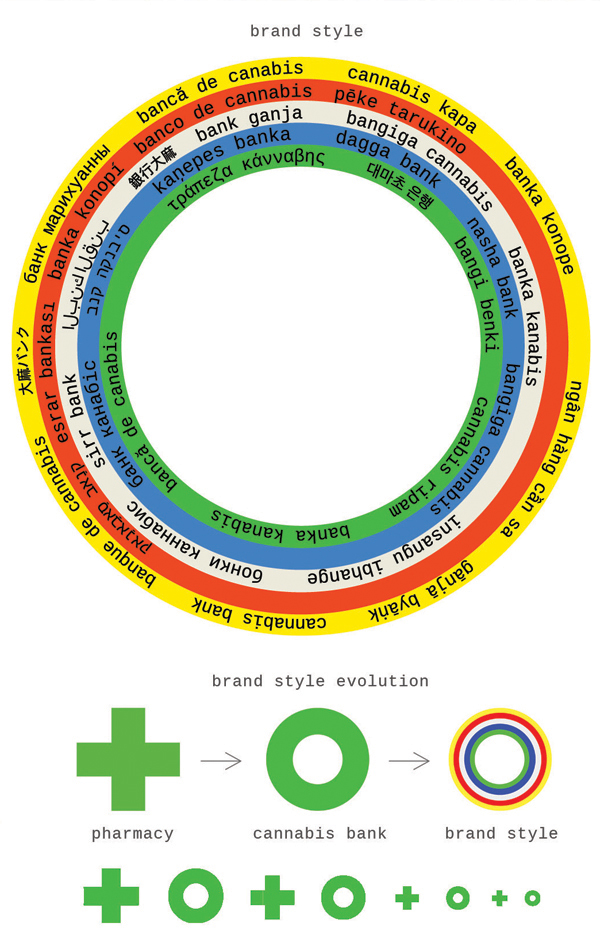
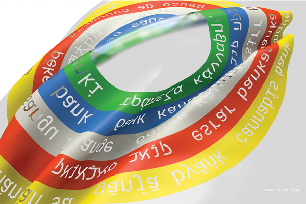